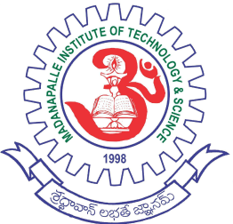

Home
Events
Research
Attendance
Courses
Profile

MITS
Madanapalle


Home
Events
Research
Attendance
Courses
Profile
Upcoming Events
MITS Institution's Innovation council (IIC) & NISP cell Jointly organizes "challenge to identify and award best innovations among student and faculty members
MITS Institution's Innovation council (IIC) & NISP cell Jointly organizes "challenge to identify and award best innovations among student and faculty members

SeeMore...>
Completed Events
SeeMore...>